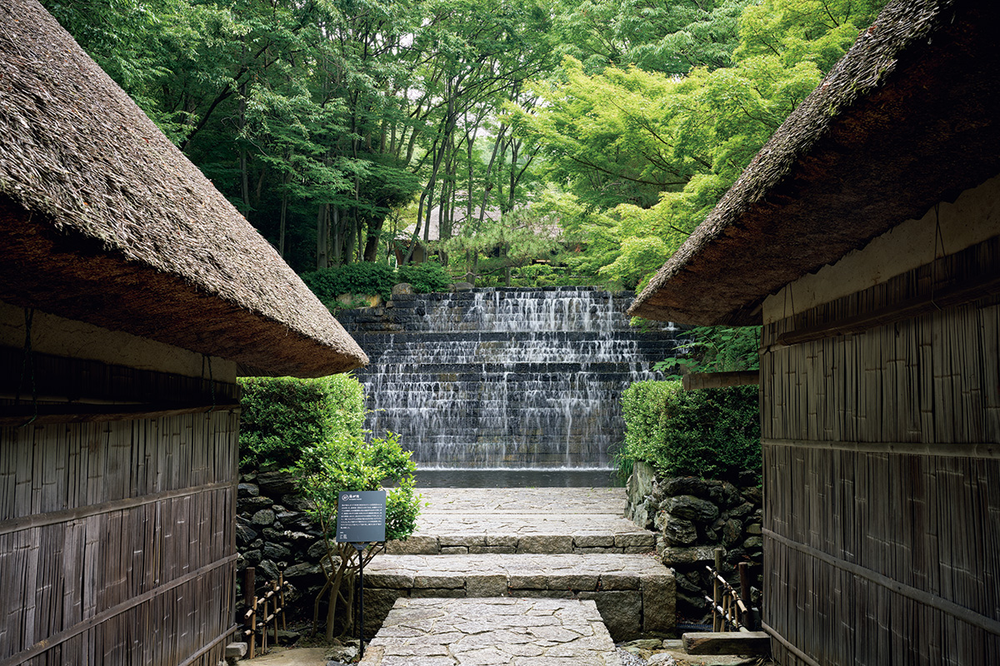
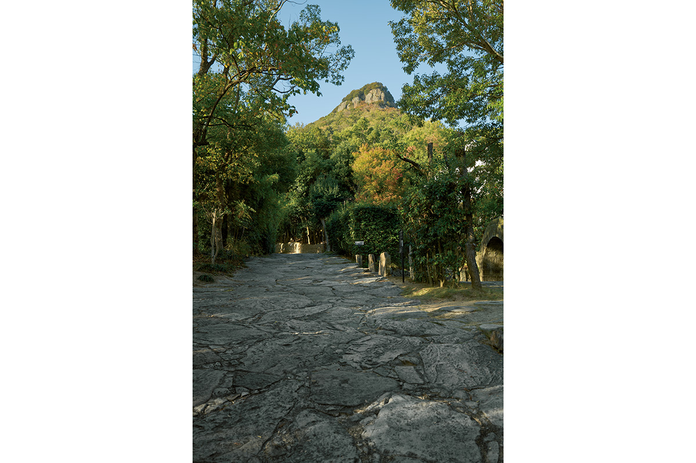
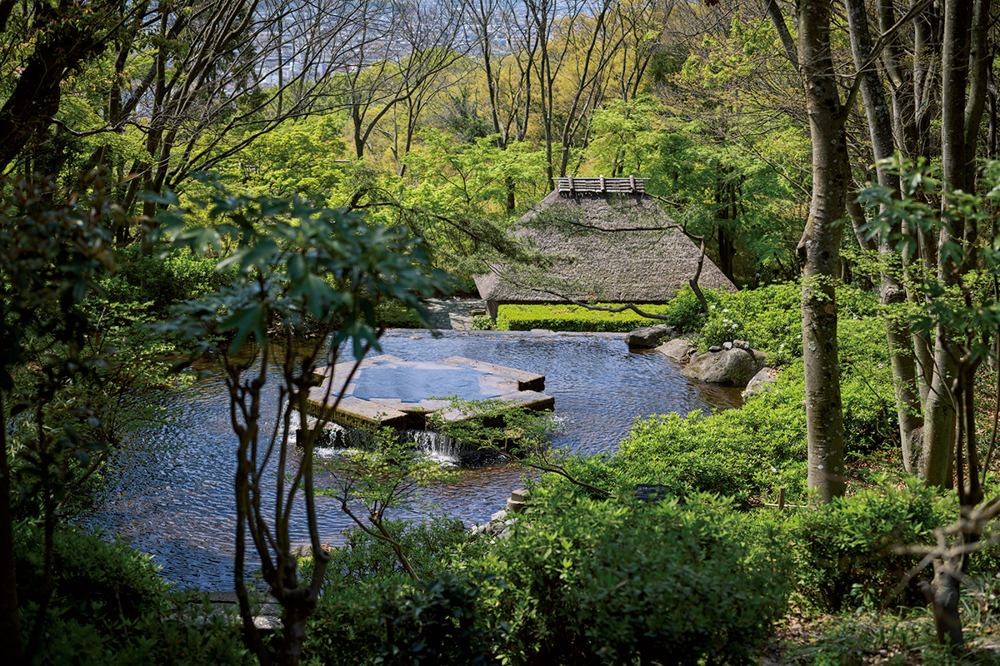
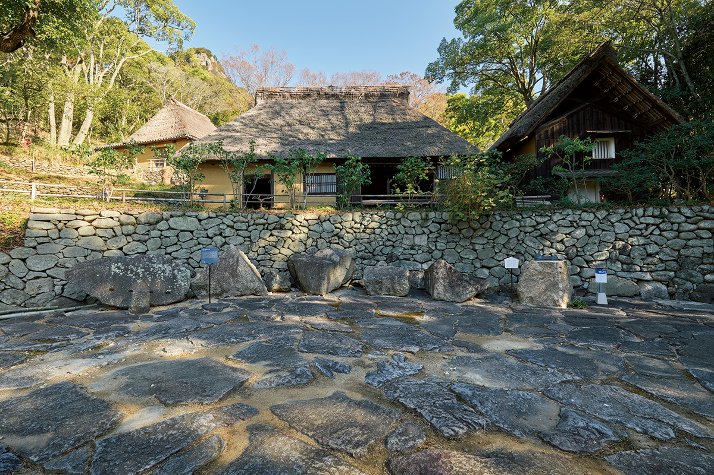

Префектура Кагава · Ясима · Сикоку-мура
Масаюки Нагарэ: камень и звук Сикоку-муры

Дорога «Нагарэ-дзака» длиной 231 метр и водопад «Сомига-таки» с грохотом воды: этот необычный ландшафт и звук деревни создал скульптор по камню Масаюки Нагарэ.
Воздух живой деревни из камня
Камень, который создаёт звук
Прогулка по Сикоку-муре начинается с подъёма. Плавный уклон становится крутым и петляет. Эту неровную дорогу «Нагарэ-дзака» полюбил историк архитектуры и посвятил ей стихи. Дорогу создал скульптор Масаюки Нагарэ. После Второй мировой войны, после скитаний, он вместе с мастерами из Адзи основал «Сэкисё-дзюку», а в 1964 году в Нью-Йорке сделал стену «Стоун крэйзи» из 550 тонн камня. Позже, работая по всему миру, он обосновался в Адзи и сблизился с основателем деревни.


Двое горячо обсуждали ландшафт деревни. По совету Нагарэ («пусть вид резко меняется от дома к дому, чтобы здания не мешали друг другу») старые дома расставили с хорошей дистанцией, используя рельеф. Нагарэ предложил и другое: «Дома мягкие и женственные, им подходит грубый мужской камень», и появилась дорога «Нагарэ-дзака» из камня, добытого в Адзи.
А ещё он сказал: «Пусть в деревне будет что-то, что издаёт звук», и родился водопад «Сомига-таки». Когда принимаешь на себя всей тяжестью его грохот, силы постепенно возвращаются. Нагарэ создал звук, который заставляет почувствовать: эта деревня живая.

По дороге «Нагарэ-дзака» поднимайтесь, держась за руки. По дороге «Нагарэ-дзака» спускайтесь, взяв друг друга за руки.
Когда идёшь молча, глядя под ноги, ты можешь заглянуть в собственное сердце. Когда идёшь, разговаривая и глядя под ноги, ты можешь проверить дружбу и любовь.
А если остановишься и поднимешь взгляд к небу, в сердце твоё войдёт новый свет надежды. Если остановишься и посмотришь вокруг, в поле зрения твоё войдёт новый пейзаж.
Такова была старая мощёная дорога на трактах. И эта мощёная дорога теперь здесь.
Историк архитектуры
Сикоку-мура (музей под открытым небом)
- Адрес
- префектура Кагава, Такамацу, Ясима-Накамати 91
- Телефон
- +81 87-843-3111
- Часы работы
- 9:30–17:00 (приём в деревню и вход в галерею до 16:30)
- Выходные
- вторник (если праздник, то следующий день)
- Вход
- взрослый 2200 иен (2000 при группе от 15 человек), студенты 1000 иен (800), школьники 600 иен (400), младшие школьники бесплатно
- Как добраться
- автобус от станции Котодэн Ясима до остановки «Сикоку-мура»
Фото: Марико Тая.